Sleep paralysis is commonly accompanied by stories of a dark figure looming at the towards the end of your bed. This time the figure faced the wall, as a gentle trickling sound echoed around the otherwise silent room. At this point I realised I wasn’t paralysed at all, and the figure was none other than Thomas Appleyard arcing a drunken stream of piss into my cycling shoes with alarming accuracy.
I’d made it back to European soil, but after watching an empty baggage carousel for ten minutes, I wasn’t sure if The Buggernaut had made it. Turns out, during the tight changeover in Porto, they decided to take off before chucking everyone’s stuff on. At least it was this side of the ocean, eh?
The boys had decided to combine my European return with a little holiday. It went exactly how you’d imagine; four solid days of drinking followed by an early morning shopping trip to Decathlon for some cheap shoes to replace the ones filled with urine.
On a side note — those trusty Shimano boots had been worth every penny. I’d worn them every day for nigh on two years, from 42° to -15°, though thick and thin, all terrain. They were still mostly waterproof too, even now. I could tell by the pool of piss in there. Watertight.
Leaving Barcelona was a bleary-eyed affair, but luckily it was sunny and I only had the simple enough task of following the coast.
{kind=link}
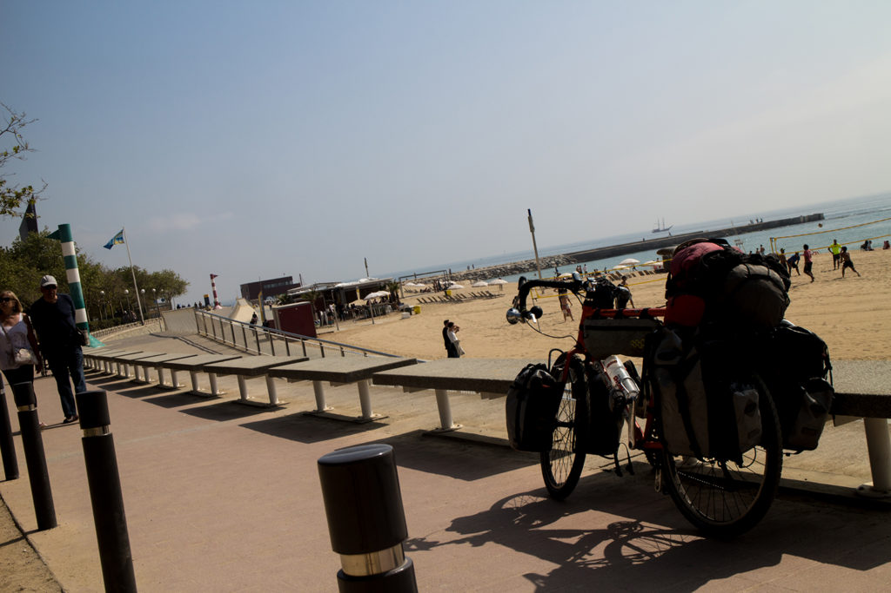
This way
I’ll give you the run-down for the home stretch — head north. That’s pretty much it. I anticipated it’d take a couple of weeks, and after the last couple of years I’d become fairly good at cycling ETAs.
For a hungover days ride, my return to European cycling went pretty well, and by that I mean it was largely uneventful and it didn’t rain. I popped in my first Lidl for too long and was delighted with the haul. For those who aren’t aware this is a massive deal to me. Lidl is the king of supermarkets for cycle tourers; good, cheap, fresh food with a big glass front so you can almost always keep an eye on your steed out front.
{kind=link}
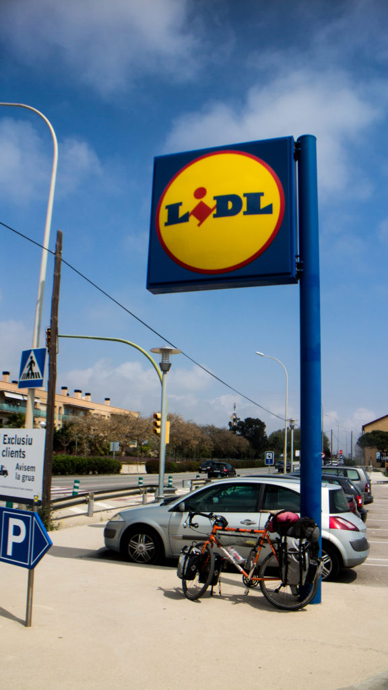
Oh, how I have longed for thee…
I saw some coastal towns that resembled miniature Benidorms complete with shit trinket stalls and fat, pink, boozed British people.
I also saw a motorcyclist slide right off a corner in front of me, which judging by the state of his arm and the relatively slow speed he was chugging along at, has halted my motorbike dreams. As I lifted the bike off and helped him up, my limited Spanish evaporated and an instinctive ‘Are you alright mate?’ slipped out of my mouth. This was met with a bemused look as he grumbled something, hopped back on his steed and rode off.
After three months of riding across the US I can honestly say I was a bit awestruck about how pretty everything was in Europe. Everything had a bit more guile and class. It was like riding through a postcard. Girona is an absolutely beautiful city. I’d never thought of it as anything more than the cheap Ryanair airport for Barcelona.
{kind=link}
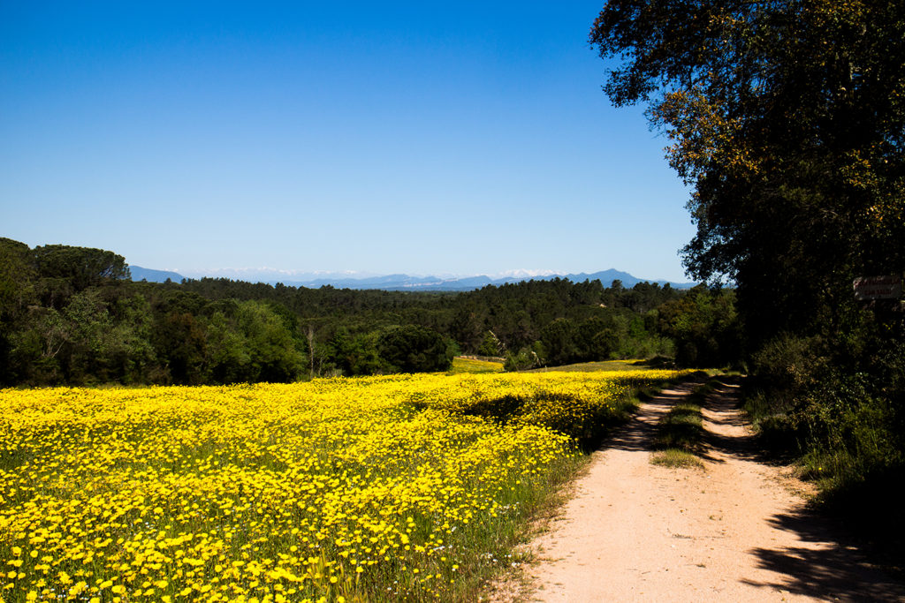
Pretty.
After a climb up a hill and an extremely busy, narrow punt up a street I was nextdoor. The twenty eighth, and penultimate (or postantepenultimate for the needlessly verbose) country.
{kind=link}
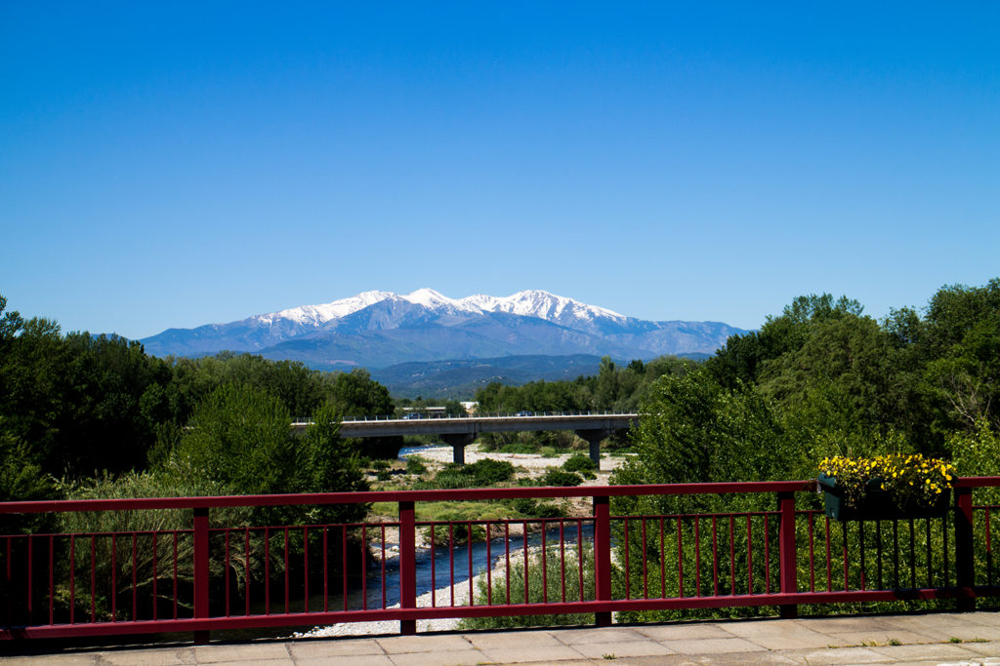
Bonjour.
I’d forgotten how Western Europe seems to have labyrinthian roads. My trusty GPS came preloaded with intricate maps of Europe’s big five, but unfortunately they must’ve underestimated the horsepower they’d stuck under the bonnet, because every zoom in or out ended up with it hanging for a minute or so. Pretty useless. I did, however, have a UK SIM card again, which meant I had unlimited data to splash on Google Maps. I could find every Lidl in France. Europe. The world. I felt like Neo on the Matrix when starts seeing numbers.
{kind=link}
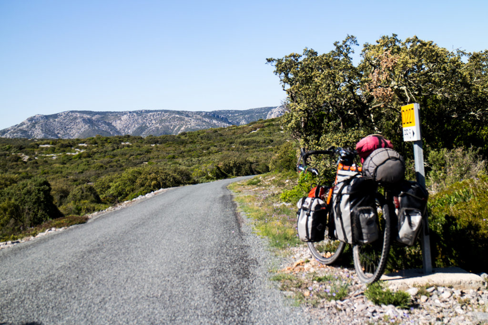
More often than not, I ended up on tiny, wee roads
The coastal part of the south of France is absolutely amazing for cycle tourers. My days pretty much consisted pootling about down little countryside or coastal paths, sampling delicacies from lidl and winding up at cheap campsites with the luxury of showers at the end of the day.
{kind=link}
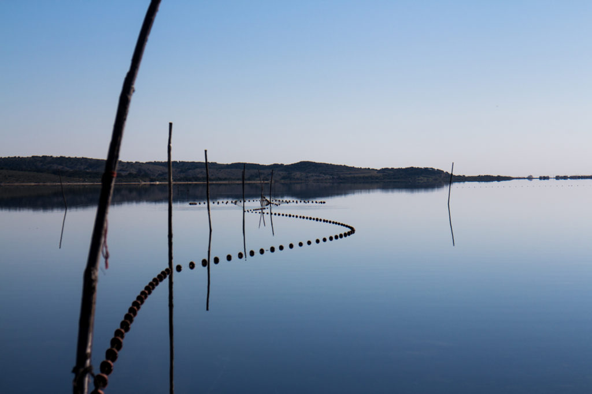
Haul in the nets
{kind=link}
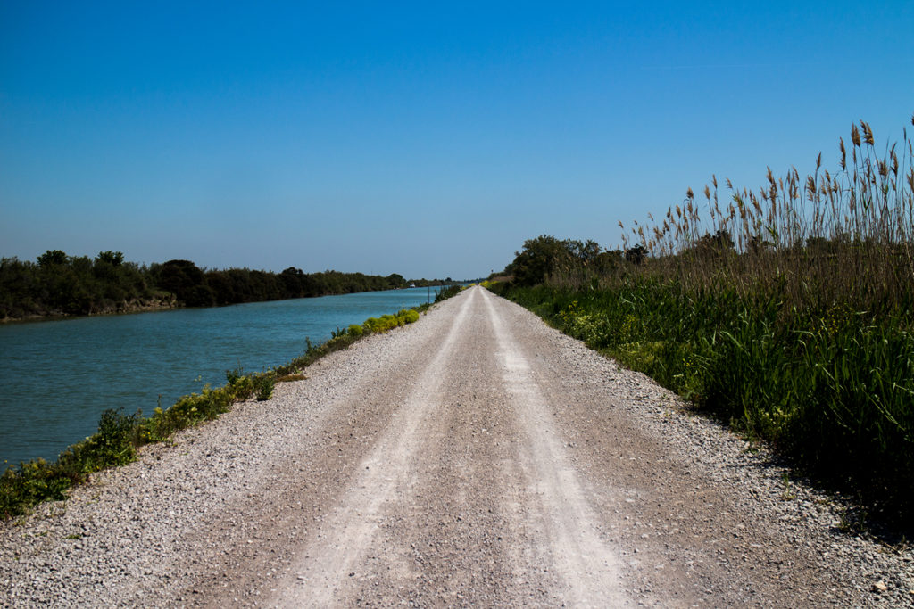
I think…

…I’m going…
{kind=link}
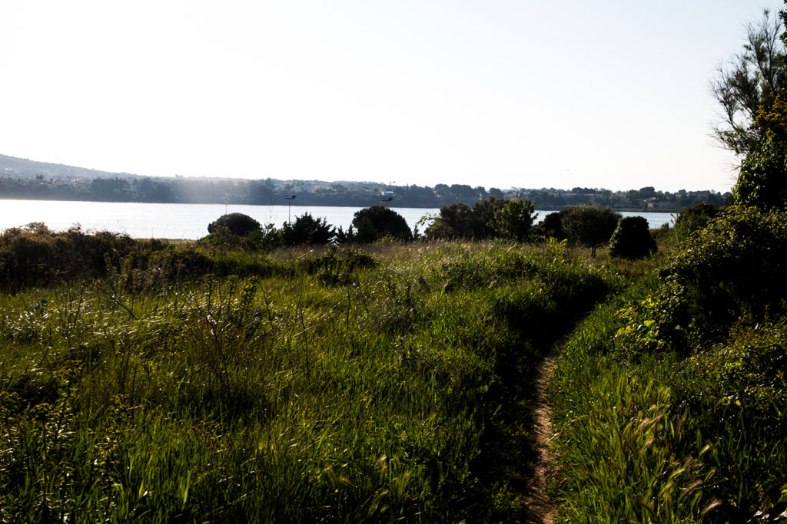
…off piste.
I ended up at Remoulins before heading north, which is where this gets a bit dull. The cycling was alright, however I started racking up big days, which leads to less eventful things happening.
Towards Lyon a motor home came millimetres from wiping me out. Nothing unusual about that, except I managed to catch this bastard up on the next red light. Hurling profanity at someone monumentally idiotic is supposed to be cathartic, but halfway through my first flurry I noticed that the old couple behind the wheel were precisely that; an idiotic old couple, blissfully unaware of how dangerous they are, and me shouting angrily at them through a window in a foreign language isn’t going to change that. That doesn’t absolve them from being dicks.
{kind=link}
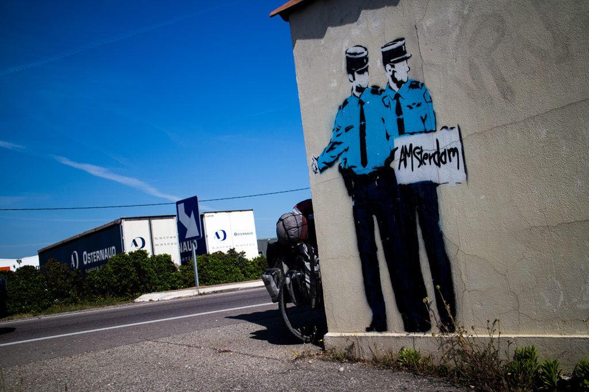
Hitchin’
Heading North, I managed to figure out how to rack up continuous miles in the right direction. Canals. This mean I had to trade tarmac for gravel sometimes. It also meant I had to trade gravel for dirt sometimes. And it also meant I had to trade dirt for plain old grass sometimes, but it was constant mileage in the right direction, with less traffic and time spent figuring out which way to go.
{kind=link}
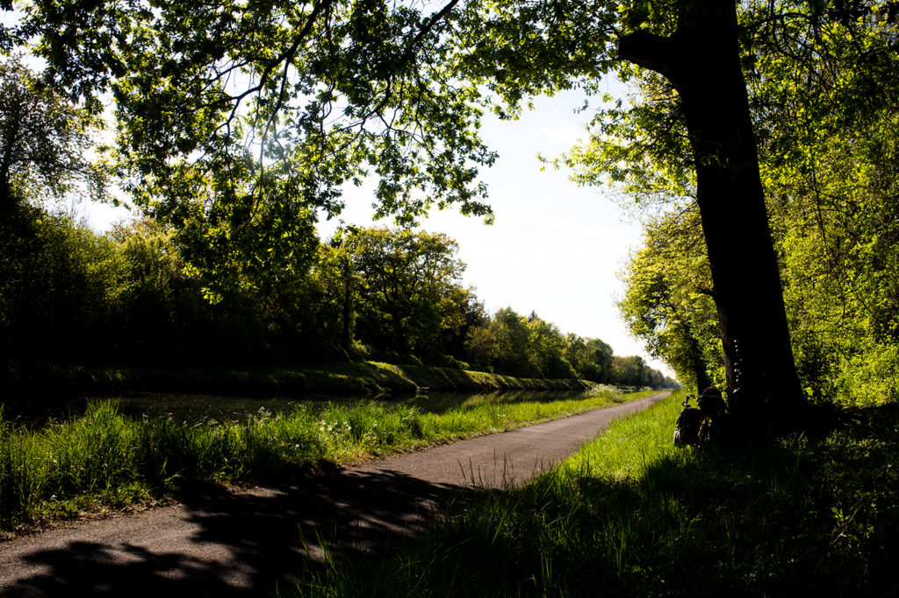
Zero cars
{kind=link}
I tactically spent a day in Lyon to avoid a thunderstorm, and in the subsequent days I got a harsh reminder of what I was heading towards as I got a pasting of hail on consecutive days. I also took the shittest shortcut ever through a field and ended up completely caked in mud. I’ll never learn.
{kind=link}
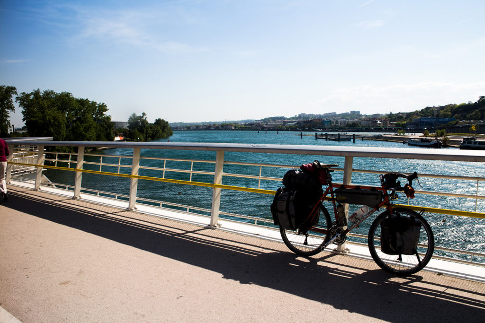
Lyon
I had my last night of wild camping canalside somewhere near Reims. I also took my final wilderturd, bringing my total up to a trouser-shredding 68. It was an emotional moment and I found myself wondering if I should’ve GPS tracked each one. Life is full of big ‘what-ifs’ like that.
{kind=link}
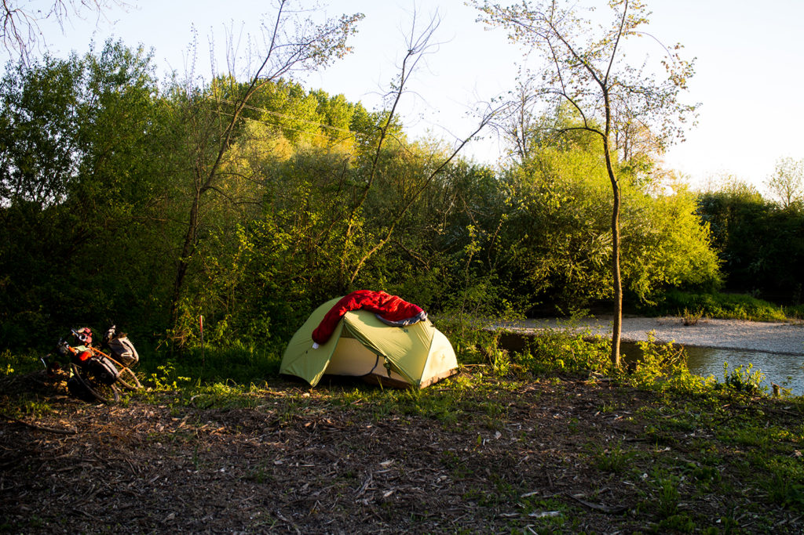
Number 68, just off to the right.
{kind=link}
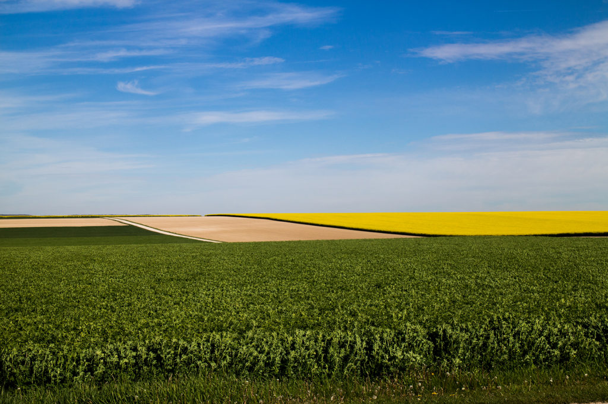
That time I cycled through Windows XP
{kind=link}
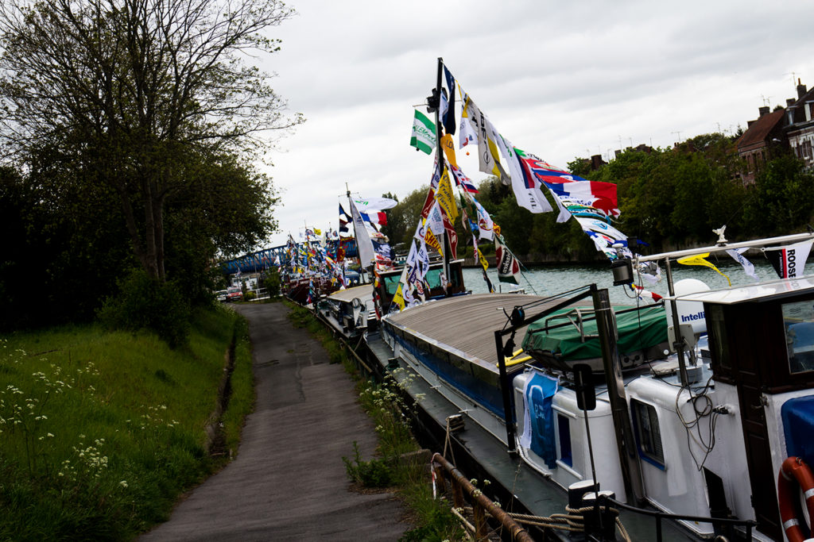
Flagship
The last day in Francais turned out to be a Bank Holiday. This meant everything other than roadside florists and McDonalds were closed, and flowers aren’t that calorific.
I put in 210km to get to Calais, and as I started drawing closer all the roads looked familiar. That’s where I saw those migrants and pointed them towards Calais. That’s the supermarket I first ran into, terrified the Buggernaut was going to get ransacked. That’s the field I took my first wilderturd. Memories.
As I reminisced upon being crouched in a field, pale-arsed, sun beating down on a cold, sweaty brow, I thought I’d best get a move on; after three McDonalds in a day I’d be lucky if it wasn’t 69.
{kind=link}
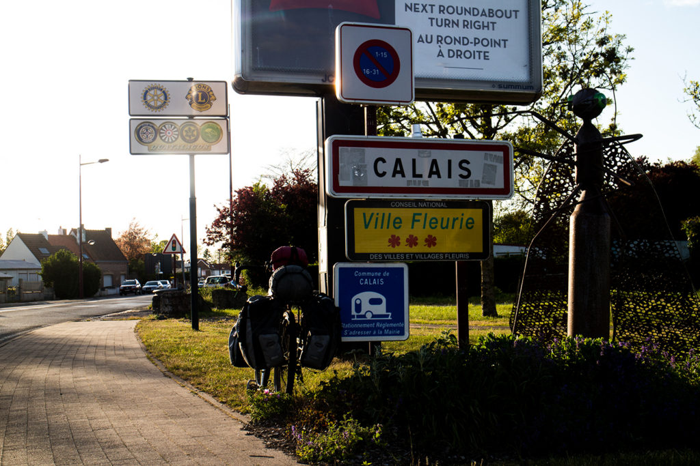
Kalezz.
Ronaldo says:
Ronaldo remembers his first wild poo in the old country. As I stood up I realised I had no hygienic paper to patter my cracker, but on the floor the turds had taken the shape of CR7. It was destiny.
August 19, 2018 — 8:38 am